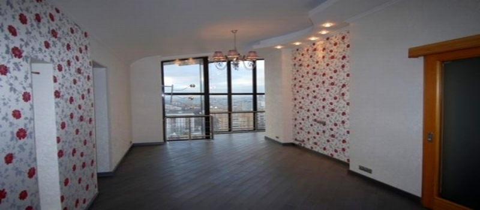

Правило нашей компании — компетентно и достойно вести бизнес!
Специально для Вас:
Бесплатно
составим смету!
Бесплатно
выезд менеджера на объект!
Бесплатно
обследование объекта и выявление дефектов!
Сезонные скидки и акции!
Поэтапная оплата!
Установка межкомнатных дверей в Севастополе
-
Установка межкомнатных дверей - многоступенчатый процесс. Каждый этап установки требует от мастера аккуратности и внимания. Небольшой ошибки достаточно, чтобы испортить дверное полотно или другие детали дверного блока.
Постараемся отметить, на что следует обратить внимание в процессе и после установки.
Петли и декоративные планки замков врезаются в полотно или коробку заподлицо и без зазоров. Сколы и задиры покрытия деталей дверного блока не допустимы .
Детали коробки (особенно фигурные) запиливаются под углом 45° и собираются без щелей и сколов массива или шпона.
Зазор между полотном дверей и коробкой следует делать равномерным по всей длине. Зазор должен обеспечивать свободное открывание закрывание межкомнатной двери. Рискованна установка минимальных зазоров - колебания температуры и влажностиии могут влиять на зазоры в дверях.
Следует обратить внимание, что бы межкомнатная дверь не тянула петли, то есть торец двери, в который установлены петли не должен упираться в коробку при закрывании(смотрите рисунок). Такой дефект проявляется в трех случаях. Первый - применение не подходящей пены. Пена расширяется и выворачивает коробку межкомнатных дверей. Второй - коробка, изначально поведенная. Надежно устранить неровность коробки может способ установки коробки на потайные саморезы в стены. Третий (самый не приятный) - установка петель на обратную сторону дверного полотна со скошенными боковыми торцами. Эта ошибка может довести до замены полотна.
Наличники режутся без сколов декоративной поверхности и подгоняются друг к другу с минимальными зазорами (менее 0,5 мм). Наличники крепятся клеем или финишными гвоздями. В случае установки наличников на финишные гвоздики, гвоздь пробивается вглубь, след от гвоздя маскируется.
Установку межкомнатных дверей желательно производить после окончания отделки потолков,после штукатурки и шпаклевания стен, после настила полов. На этапе отделки стен следует проконтролировать геометрию проемов межкомнатных дверей по ширине и высоте.
Коробки межкомнатных дверей выставляются вертикально в обоих взаимоперпендикулярных плоскостях. Проверить вертикальность не сложно. Установленная межкомнатная дверь должна оставаться неподвижной в любом положении.
Крепление коробок межкомнатных дверей в проем возможно разными способами. Самые распространенные способы: установка межкомнатных дверей на монтажную пену, используя её клеящие свойства, установка на монтажные подвесы, установка закреплением дверной коробки на шурупы непосредственно в стены. На наш взгляд, последний способ - самый эффективный, и по этой причине взят за основу технологии установки межкомнатных дверей. При этом все крепления выполняются скрыто без повреждений декоративной поверхности дверных коробок.Зазор между стеной и коробкой межкомнатной двери заполняется монтажной пеной. Способ "на шурупы" позволяет максимально точно выставить стойки коробки, идеально вывести зазор между полотном межкомнатной двери и коробкой, исправить покоробленность коробки и исключить коробление в будущем, надежно закрепить коробку межкомнатной двери в проемах типовых санузлов с тонкими стенами.